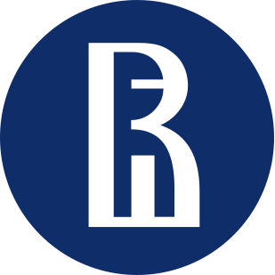

Нина Антонова
Head of Design · Дизайн-директор продукта
Руковожу дизайном Яндекс Телемоста. Собрала команду с нуля и вместе с ней развиваю продукт для видеовстреч на вебе, десктопе, iOS и Android.
До Яндекса проектировала инструменты аналитики в VK и новые сервисы в pickTech.
Head of Product Design
-
01
Дизайн-команда с нуля
Выстроила дизайн-процессы с нуля и расширила команду с одного до десяти дизайнеров.
-
02
Развитие видеовстреч
Вместе с командой выпустила больше 50 крупных функций. Телемостом пользуются более 8 млн человек в месяц.
-
03
Телемост и Мессенджер
В 2026 году руководила дизайном при объединении двух продуктов в коммуникационную платформу Яндекс 360 и переходе на общую дизайн-систему.
-
04
Визуальная идентичность
С командой коммуникационного дизайна обновила визуальный язык сервиса: от логотипов и иллюстраций до лендингов.
Head of Product Design
ИИ-ассистент в Яндекс 360 для поиска по письмам и файлам, анализа документов и создания контента
Product Designer → Design Lead
Мультиплатформенная система аналитики и атрибуции
Design Lead
Вместе с бывшими коллегами запустила с нуля платформу для выбора ПО и системных интеграторов


НИУ ВШЭ
— сейчас
Ментор и научный руководитель программы «Управление цифровым продуктом» в Высшей школе бизнеса НИУ ВШЭ
4 приложения под Apple TV
2 приложения под iOS на GPT Codex без использования Figma